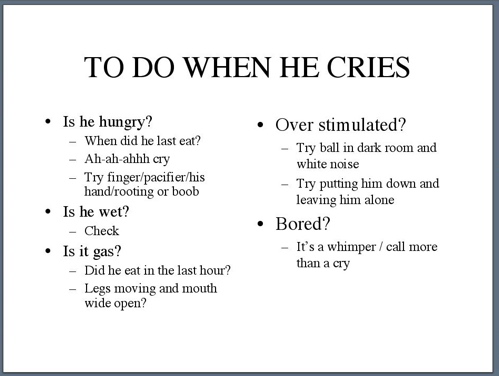
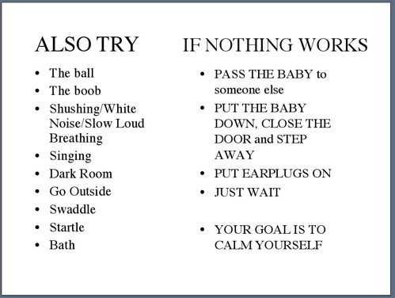
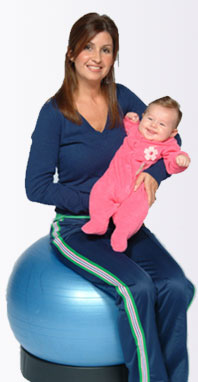
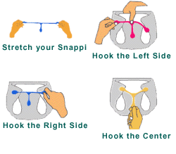

November 15, 2005
"What to do when he cries" poster
It is a known fact that first-time parents (especially mothers I have noticed) FREAK OUT when their baby starts crying, especially if the crying lasts longer than, say...10 seconds?
It's a deep, visceral reaction, something that has to do with human evolution I'm sure, though I can't think of an obvious reason why a baby's cry would make the mom panicked and completely useless...
Moms toughen up after a while (Mariah is already doing much better after one month), but at least at first, all the soothing techniques go out the window and the mom starts sobbing alongside her wailing baby.
Fathers have a different approach: (the story is from my friend and 3-times father Pete S.): When you have to deal with a crying baby in the middle of the night, you know it has to be one of 5 things (hungry, wet, gas/pain, overstimulated, bored), so you cycle through them, but in your half-asleep state you only cycle through 4 of them, and you do it over and over, with the reason for the crying being, obviously, number 5, the one you can't think about.
Soooo...Mariah and I have made a little poster, that we have printed in two copies and hung in our kitchen and in our bedroom. It's called "what to do when he cries", and it lists, in BIG TYPEFACE, BLACK ON WHITE, all the things that could cause the crying and what to do about it.
Here's what our poster look like:


It has already come handy a couple of times (once the "go to dark room" worked and another time he was wet), so we thought we would share the idea with other parents or parents-to-be.
Here's the extremely simple 2-slide powerpoint file in case you want to use it / customize it: whenhecries.ppt
Posted by patata at 10:26 AM
November 02, 2005
Newborn Essential: the Pilates Ball

Ok, forgive the frightening picture, but I thought it was hilarious looking so I had to post it. I can't quite put my finger on what it is, but there's something about the lady and the baby that just makes me shiver. Brrr!
Anyways, we bought a pilates/exercise ball for the last few months of pregnancy, and it was great. Mariah's back hurt so much that she couldn't sit in a single spot for very long (not even in our awesome la-z-boy), and the ball made her sit with her legs spread apart and her spine erect, which somehow was very comfortable. Definitely a well-spent $20, even just for that.
But the power of the ball really comes out with a newborn! The Guids LOVES the ball, and so do my arms. I hold him, sit on it and bounce up and down. It calms him immediately, even the first night home when Mariah's milk hadn't come yet and he was starving.
We now keep it in our bedroom and use it as a last resort: when all else fails, get out of bed and on the ball. It's awesome.
I secretly can't wait until the Guids doesn't need it any longer so that I can bring the ball to my office and make it my secondary chair. Active sitting yo! :)
Just trust me on this one: if you are expecting or have a small baby, get out and get yourself one (a cheap one is fine I think). Don't inflate it the whole way (I think 2/3 is fine), your knees should pretty much be at 90% when you sit on it.
Oh, one thing about the picture: I like the little ring that keeps the ball in place, I gotta admit that the ball by itself might be a bit dangerous (you can fall backwards) - just be careful and you'll be fine, we have the habit of having it touch the bed or a wall before we sit on it.
Google Search: exercise ball.
Posted by patata at 09:29 AM | Comments (1)
Newborn Essential: Cloth Diapers
I'm kicking off the new "Newborn Essentials" blog category with something I can't imagine living without at the moment: cloth diapers. (ok, I can imagine it, but that's not for us, The Guids explodes when we least expect it!).
In the first two weeks home with the baby, I think I have changed about 180 diapers. The first couple of days we used disposables (that's what they tought us in the hospital), then I switched to cloth, and I am a BIG fan. Let me list a few reasons why:
They are better for The Guids: they are 100% cotton and no nasty chemicals touch his sensitive little butt.
They are FAR better for the environment: "Tiny Tots’ award winning laundering plant conserves more water than the making of paper diapers and uses biodegradable and phosphate-free detergent. --- Disposable diapers are 100% garbage and comprise the THIRD largest consumer source of landfill in the U.S. --- It takes 20 TREES to diaper one baby in disposables for 2 years." (biased source here). In the two days of disposable use, we filled up two whole garbage bags just with diapers, which made me feel horrible. Check out the first video on this page.
They are very convenient: every Wed. morning a nice man brings us a big bag of clean ones and takes away the bags of dirty ones from the previous week. The bags that they give you are sturdy and pretty good at keeping the smells inside. We use them in our Diaper Champ, another newborn essential.
They are easy to use: the dangerous pins of the past have been replaced by nice little toothed rubber clips and the cloth is covered by a handy velcro-fastened plastic cover. Watch this short video for a demonstration.

The are CHEAP: even with the home-delivery service, I now pay 23 cents a diaper (a pack of newborn Pampers is 32 cents a diaper).
They contain the poop better: I might not have the biggest statistical sample here, but I feel that with the disposables the poop got smeared all the way up the baby's back, which hasn't happened with the cloth. The poop stays where it is, and the butt is easier to clean overall.
For newborns: easy to tell if it's a wet diaper or not: you have to keep track of wet vs. stool diapers during the first few days of life, and disposables made it pretty much impossible to tell the two apart. With cloth, when it's wet, you know it.
So there you have it.
Overall, I will say this: the time has come for cloth diapers to shed their image of old-fashioned, clumsy, dirty and leaky poop-traps. For me, using a cloth diaper service is a lot like using CityCarShare: cheap, convenient, clean, good for the environment and definitely "a big-city thing". :)
We will still use disposables when we go out, though I sort-of hate it.
If you live in the Bay Area, we recommend www.tinytots.com.
Posted by patata at 09:23 AM | Comments (2)